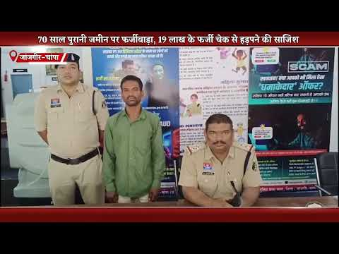
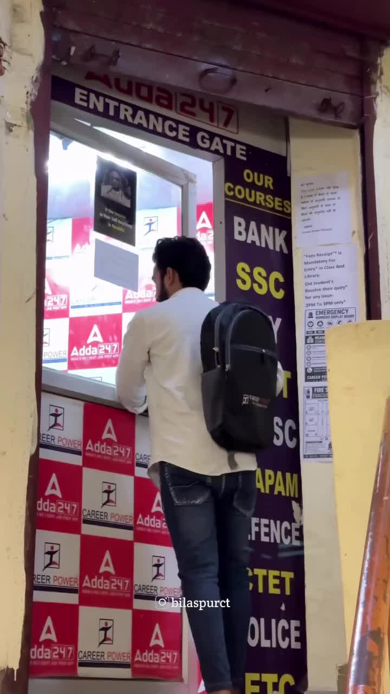
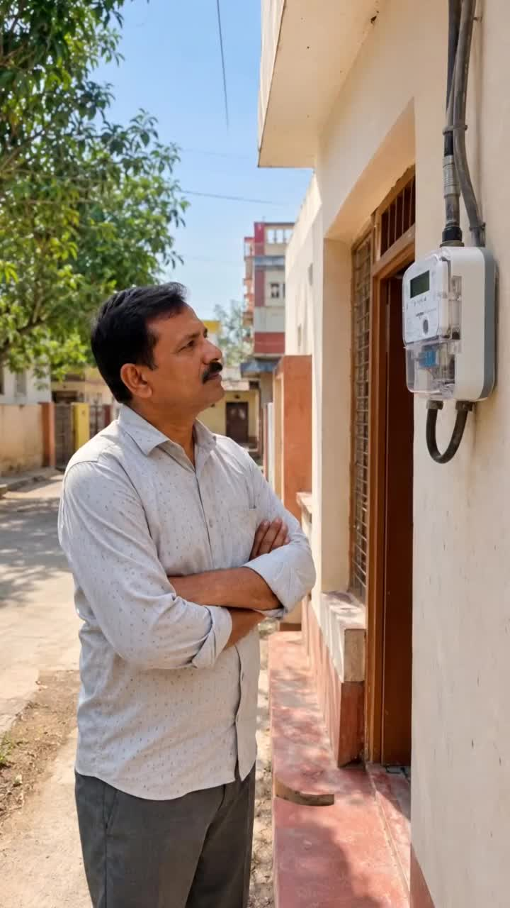
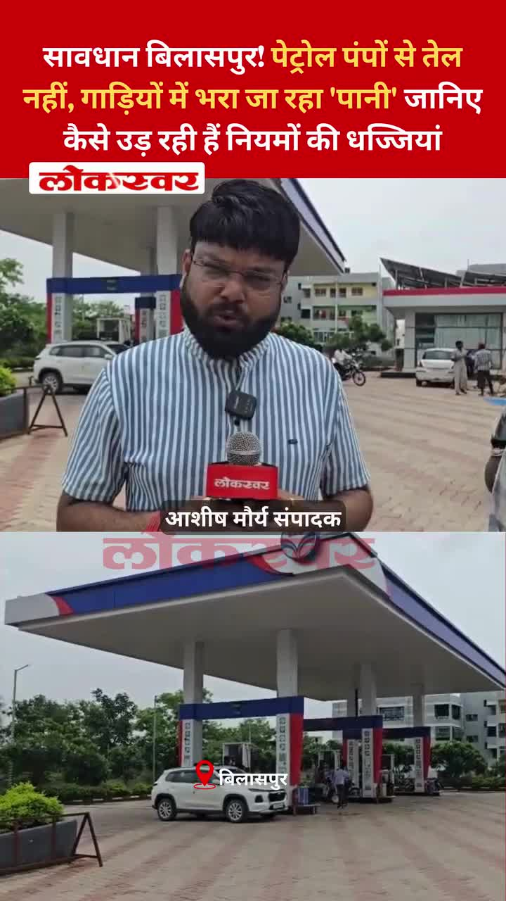
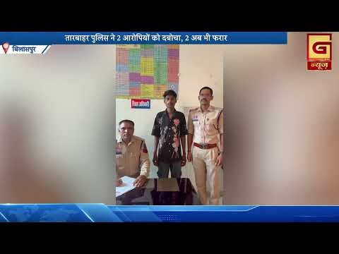
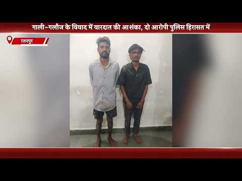

Bilaspur News Hub
1
BUSINESS
2
EDUCATION
3
EVENT
9
GOVERNMENT
2
INFRASTRUCTURE
13
INSTAGRAM NEWS
1
NEWS
1
OTHER
14
POLICE
1
SOCIAL
6
YOUTUBE VIDEOS
BUSINESS1

G News Bilaspur · Published: 2026-07-19 | Scraped: 2026-07-19 16:50:05
A fraudulent registration of a 70‑year‑old land plot was executed using fake records and a forged power of attorney. The case exposes loopholes in property documentation and is under investigation.
EDUCATION2

Nai Dunia Bilaspur · Published: Sun, 19 Ju | Scraped: 2026-07-19 12:56:55
The Pre-B.Ed examination is being held today across Bilaspur and five other divisions. Candidates will sit under strict jammer and biometric surveillance to ensure fairness.
G News Bilaspur · Published: 2026-07-19 | Scraped: 2026-07-19 16:50:05
The DLED-BED entrance examination was conducted smoothly across 35 centers in Bilaspur, ensuring a peaceful environment for candidates. No major incidents were reported, reflecting efficient coordination by the organizing authorities.
EVENT3

Nai Dunia Bilaspur · Published: Sun, 19 Ju | Scraped: 2026-07-19 08:10:11
Bilaspur is experiencing relentless heavy rainfall with thunderstorms expected to persist until July 23. Residents are advised to stay cautious and avoid flood-prone areas.

Lokswar · Published: Sun, 19 Ju | Scraped: 2026-07-19 08:10:11
The weather department has issued a heavy rain alert for Chhattisgarh covering the next 48 hours. People should prepare for possible flooding and travel disruptions.

Nai Dunia Bilaspur · Published: Mon, 20 Ju | Scraped: 2026-07-20 05:36:32
After three days of heavy rain, Bilaspur saw the downpour stop but humidity took over, leaving garbage piles on roads and highlighting drainage issues.
GOVERNMENT9

Nai Dunia Bilaspur · Published: Sun, 19 Ju | Scraped: 2026-07-19 08:10:11
The High Court ruled that age cannot be decided solely by Aadhaar card, providing significant relief for accident compensation claims. This decision ensures more reliable age verification methods for legal purposes.

Nai Dunia Bilaspur · Published: Sun, 19 Ju | Scraped: 2026-07-19 09:54:14
The Chhattisgarh High Court ruled that a second wife is eligible for family pension if the first wife has passed away, ensuring financial security for remarried widows. The judgment clarifies pension rights under state civil service rules.

Nai Dunia Bilaspur · Published: Sun, 19 Ju | Scraped: 2026-07-19 11:09:31
A Congress leader in Bilaspur was attacked in a murder-for-hire plot. Police have arrested two suspects, while the mastermind remains at large.

CG Wall · Published: Sun, 19 Ju | Scraped: 2026-07-19 14:53:07
A long‑running investigation led to the arrest of Mahendra Goenka on charges of forging documents and siphoning company funds worth over a thousand crore rupees. The case highlights major financial manipulation and a conspiracy to defraud investors.

CG Wall · Published: Sun, 19 Ju | Scraped: 2026-07-19 18:52:25
After three days of rain, flood victims in Belatra face hunger while some profit from bags and sweets. Congress leader Vijay visited and demanded relief details from the municipal corporation. The situation remains critical.

Nai Dunia Bilaspur · Published: Mon, 20 Ju | Scraped: 2026-07-20 05:36:32
The Chhattisgarh High Court directed the Centre and State not to terminate or withhold salaries of computer operators after ten years of service, granting them job security and relief.

CG Wall · Published: Mon, 20 Ju | Scraped: 2026-07-20 05:36:32
Judicial officers across Chhattisgarh are receiving training in e-summons and digital tools to make the justice system more modern and transparent, starting in Bilaspur.

District Administration Bilaspur · Published: 2026-07-19 | Scraped: 2026-07-19 20:44:16

District Administration Bilaspur · Published: 2026-07-19 | Scraped: 2026-07-19 20:44:16
INFRASTRUCTURE2
G News Bilaspur · Published: 2026-07-19 | Scraped: 2026-07-19 09:54:14
Heavy rain turned loose rubble into a hazard on the under‑construction Dhekha National Highway, creating deep mud, traffic jams and several accidents. Commuters face long delays and safety risks as work remains stalled.
G News Bilaspur · Published: 2026-07-19 | Scraped: 2026-07-19 16:50:05
Water released from Arpa‑Bhainsajhar barrage caused the Arpa river's water level to rise, prompting administrative alerts. Authorities are monitoring the situation to prevent flooding.
INSTAGRAM NEWS13
A social media post from Bilaspur Today News shares a devotional message honoring Lord Bhole Nath, reflecting the community's religious spirit and cultural celebrations.
A social media post shares the divine vision of Mother Naina Devi on 19 July 2026, describing her presence on high mountains and offering solace to devotees.

Dreaming of a Government Job? 🚨 This is your sign to start today!Career Power Adda 24×7, Bilaspur is offering a Monsoon Offer – Flat 50% OFF on ALL Batches. Learn from experienced faculty, attend regular mock tests, get personal mentorship, and prepare in smart classrooms with both Hindi & English medium options.Don’t let this opportunity pass. Visit today, attend a demo class, and take the first step toward your dream government job. 💼📚📍 Near Agrasen Chowk, Opp. Vinayak Netralaya, Bilaspur💬 Tag a friend who’s preparing for government exams and save this post for later!#bilaspurct #bilaspur #career #careeradda #adda247 by @bilaspurct

स्मार्ट मीटर को लेकर अफवाहों से बचें। सही जानकारी अपनाएं, जागरूक उपभोक्ता बनें।स्मार्ट मीटर और 'मोर बिजली' ऐप के जरिए अपनी बिजली खपत को बेहतर ढंग से समझें। सही जानकारी के साथ बिजली का प्रबंधन करें और वास्तविक खपत के अनुसार पारदर्शी बिलिंग का लाभ उठाएं।हमारे व्हॉट्सऐप चैनल से जुड़ने के लिए लिंक पर क्लिक करें...https://whatsapp.com/channel/0029VbBdXyRJf05ivBgauG3V#SmartMeterApnao #HarGharSmartMeter#SwitchToSmartMeter #SmartMeterBenefits #Chhattisgarh @MinOfPower @vishnudsai @ChhattisgarhCMO by @bilaspurdist
A social media update posted by @bilaspurdist on Instagram, likely sharing local news or community content. The post may include photos, stories, or announcements relevant to Bilaspur residents.

Beware Bilaspur! Petrol pumps are allegedly selling water instead of fuel, defrauding customers and risking vehicle damage.
New Horizon Dental College has started admissions for the BDS 2026 batch, urging quick applications to secure seats. This move expands dental education opportunities in the area.
The district promotes solar panel installation to cut electricity costs. Under PM Surya Ghar free bijli scheme, residents get subsidies and free power, boosting renewable energy and savings.
The Bilaspur district official's Instagram account posted a new update, though specifics are not provided. It appears to be a routine community or informational post.
The Pradhan Mantri Surya Ghar initiative aims to install solar panels in all households, ensuring daily savings on electricity bills. This program will free families from paying for power and promote renewable energy usage across the region.
A scenic rain video from Bilaspur has gone viral on Instagram, showcasing the city's beauty during monsoon. The post uses hashtags #barishkamosam and #viral, highlighting local weather charm.
NEWS1
G News Bilaspur · Published: 2026-07-19 | Scraped: 2026-07-19 14:53:07
The bulletin from G News Bilaspur on 19 July 2026 covers latest regional updates and events. It provides timely information on local news and developments. Viewers can expect comprehensive coverage of the day's happenings.
OTHER1
G News Bilaspur · Published: 2026-07-19 | Scraped: 2026-07-19 16:50:05
The entry appears to be a timestamp or event marker for 19 July 2026. No further details available.
POLICE14

Nai Dunia Bilaspur · Published: Sun, 19 Ju | Scraped: 2026-07-19 08:10:11
A violent murder occurred in Ratanpur when a youth was attacked and killed on a rooftop following a drunken argument. The assailants used a hammer and bricks, leading to fatal injuries.

Lokswar · Published: Sun, 19 Ju | Scraped: 2026-07-19 08:10:11
A major reshuffle in the police department sees 16 officers and staff reassigned to different postings. The changes aim to improve administrative efficiency and operational coverage.

Nai Dunia Bilaspur · Published: Sun, 19 Ju | Scraped: 2026-07-19 09:54:14
Armed robbers in burqas entered a house in Kota, threatened a woman with a pistol, and stole her jewellery before fleeing. The incident highlights rising concerns over targeted home invasions in the region.

Lokswar · Published: Sun, 19 Ju | Scraped: 2026-07-19 09:54:14
A mother and her ten‑month‑old infant were found dead in a field borewell in Raigarh, victims of a brutal double murder. The shocking crime has sparked widespread outrage and a police investigation.

CG Wall · Published: Sun, 19 Ju | Scraped: 2026-07-19 11:09:31
Kota police in Bilaspur quickly solved a 25‑lakh gold‑silver theft, recovering the stolen ornaments within hours.

CG Wall · Published: Sun, 19 Ju | Scraped: 2026-07-19 11:09:31
A drunken brawl in Akaltari, Bilaspur escalated to a brutal rooftop murder, sending shockwaves through the community.
Lokswar · Published: Sun, 19 Ju | Scraped: 2026-07-19 12:56:55
In Bilaspur's Ratangarh police station area, a man was murdered after an intoxication dispute escalated, with his head crushed using a brick. Police are investigating the shocking crime.

CG Wall · Published: Sun, 19 Ju | Scraped: 2026-07-19 14:53:07
A young woman was lured on Instagram, recorded during a video call, and the clip was spread online. Police tracked and arrested the culprit 900 km from the scene.

CG Wall · Published: Sun, 19 Ju | Scraped: 2026-07-19 18:52:25
A woman was run over and dragged 20 meters on a national highway before the driver was arrested. Police are investigating the incident and have taken the suspect into custody.

CG Wall · Published: Mon, 20 Ju | Scraped: 2026-07-20 01:28:32
Four juvenile inmates escaped from a special home in Bilaspur, resulting in the murder of watchman Narendra Kumar. SSP Rajnesh Singh pledged to apprehend the fugitives and take legal action against those inciting violence.
G News Bilaspur · Published: 2026-07-19 | Scraped: 2026-07-19 09:54:14
Thieves took advantage of heavy rain and darkness to break into a local kirana shop and steal goods. Police have launched a search for the culprits and urged residents to secure their premises.
G News Bilaspur · Published: 2026-07-19 | Scraped: 2026-07-19 09:54:14
A couple was killed in a land dispute, and their bodies were burned to destroy evidence. The incident highlights rising property violence in the region, prompting an investigation.

G News Bilaspur · Published: 2026-07-19 | Scraped: 2026-07-19 12:56:55
A plot to kill a morning walker for a five‑lakh reward has been uncovered, leading to arrests. The case highlights concerns over contract killings in the region.

G News Bilaspur · Published: 2026-07-19 | Scraped: 2026-07-19 16:50:05
A young man was brutally murdered in Aklatari, his blood‑soaked body discovered on a rooftop. Police have launched a murder probe and are searching for the culprits.
SOCIAL1

Bol Bam devotees protest train cancellation, plan G.M. office siege / सावन मास में बोल बम श्रद्धालुओं ने ट्रेन रद्द करने के विरोध में जीएम कार्यालय घेराव शुरू किया
Nai Dunia Bilaspur · Published: Sun, 19 Ju | Scraped: 2026-07-19 11:09:31
Bol Bam devotees in Bilaspur staged a protest against train cancellations, planning a siege of the G.M. office from Ramlila Maidan.
YOUTUBE VIDEOS6
GRAND NEWS BILASPUR:अकलतरी में युवक की निर्मम ह'त्या, क्षेत्र में लगातार ...
GRAND NEWS BILASPUR:बिलासपुर में जलभराव वाले इलाकों में डायरिया फैलने का डर, स्वास्थ्य विभाग अलर्ट..
GRAND NEWS BILASPUR:बिलासपुर में जलभराव वाले इलाकों में डायरिया फैलने का ...


The latest evening bulletin from Bilaspur Grand News covers regional updates as of July 19, 2026. It includes brief reports on politics, crime, and local events.
A patient died at Noble Hospital, prompting public anger and allegations of medical negligence. Authorities have launched an inquiry into the incident.
Even three days after a major disaster, local administration remains absent and victims receive no aid. Residents demand immediate government intervention and relief measures.
A Congress leader was attacked in a targeted 'supari killing' in Bilaspur, prompting police investigation. The incident highlights rising political violence in the region.